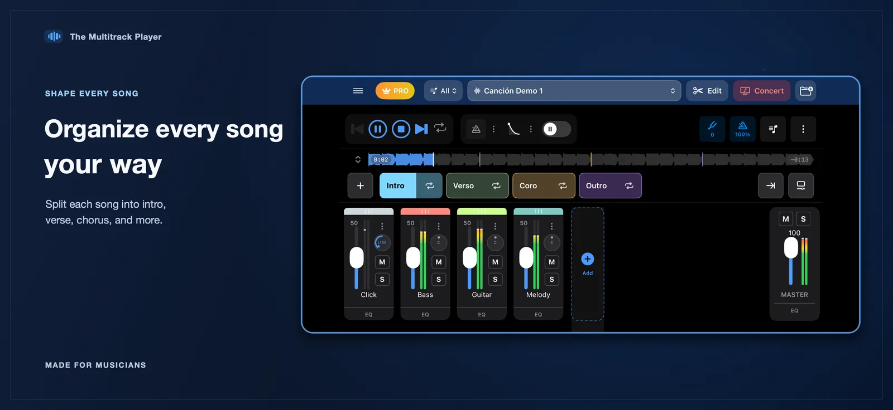
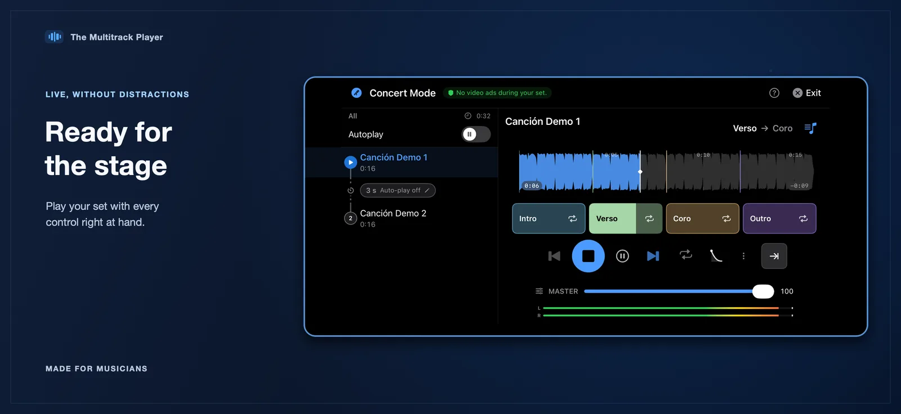
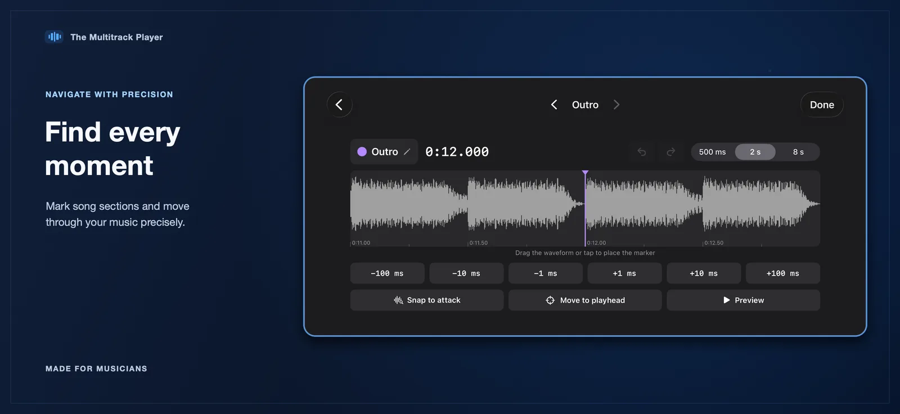
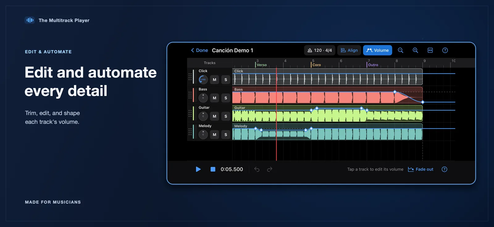
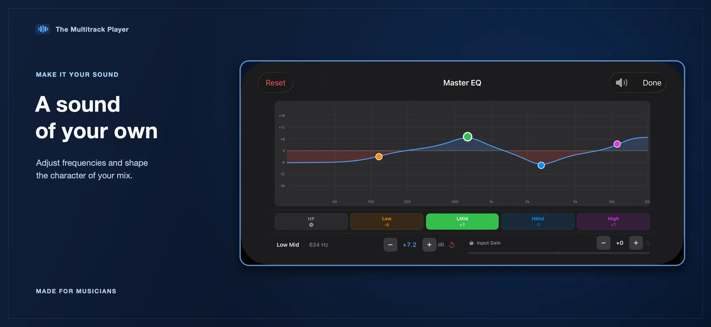
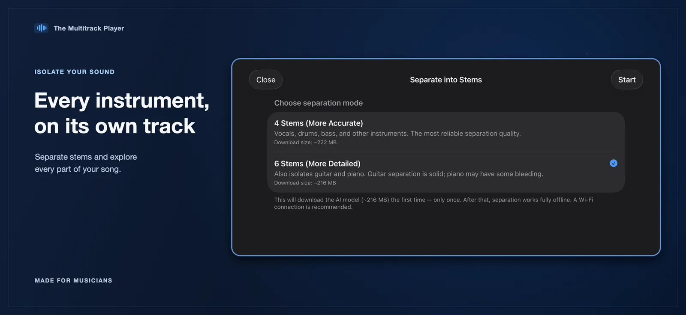
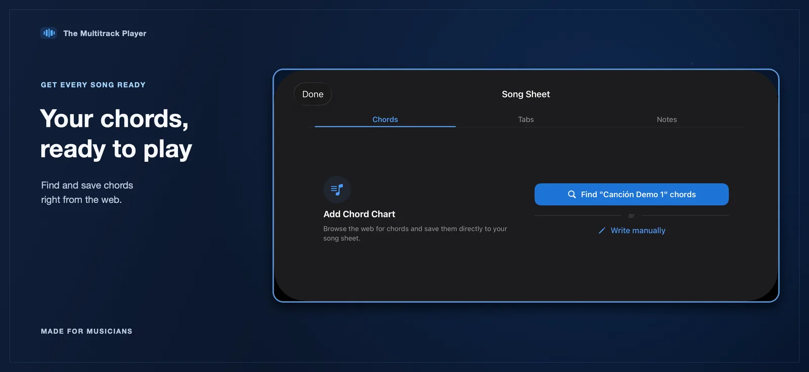
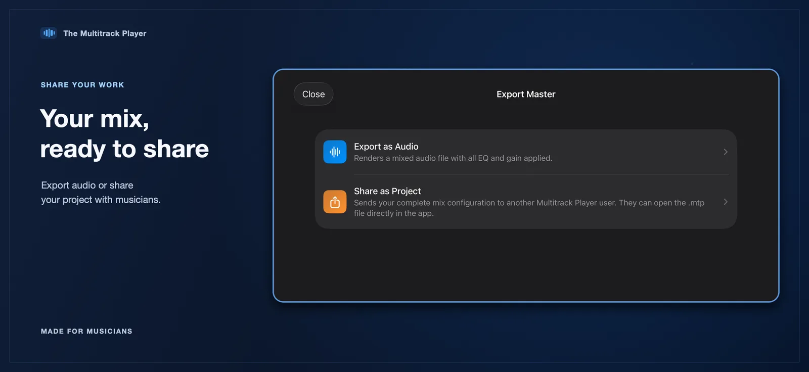

Move through song sections
Organize an arrangement into named sections and jump to the part your performance needs.
The Multitrack Player
Keep every track in your hands. Build your set, shape the mix and move through song sections with live playback controls designed for musicians.
For iPhone and iPad · Requires iOS 17 or later

One workspace, all your parts
Prepare your songs, find the moment you need and make adjustments without losing sight of the full arrangement.

Organize an arrangement into named sections and jump to the part your performance needs.

Use the waveform and fine controls to set section boundaries and refine transitions.

Adjust track level, pan, mute, solo and pitch, with tempo, time signature and metronome controls close at hand. When available, route tracks to separate outputs on a connected audio interface.

Fine-tune a track with the built-in equalizer and keep the mix manageable as the arrangement changes.

When enabled, choose a four- or six-stem separation workflow. After downloading its model, stem separation can be used offline.

Browse chord resources and keep a song's chord information available alongside your multitrack project.

Render your mix as an audio file or share the .mtp project file to continue working with it.
Depending on the features enabled in the app, your workflow can also include audio recording, track-volume automation, audio editing and multichannel routing to a connected interface. In-app video tutorials are available too.
Bring in audio from Files, organize tracks into a project, then use the same song controls to prepare and play your set. Your imported audio and projects are stored locally on your device.
Import audio files from Files, including common formats supported by iOS.
Arrange sections, balance tracks and keep the cues you need easy to reach.
Use concert mode, your song queue and individual track controls during playback.
The Multitrack Player
Explore multitrack playback and performance controls on iPhone and iPad.
View on the App Store